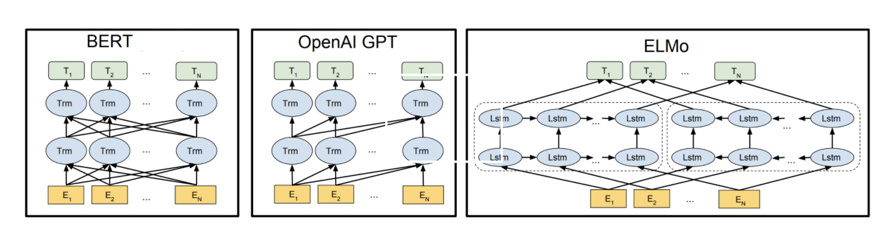
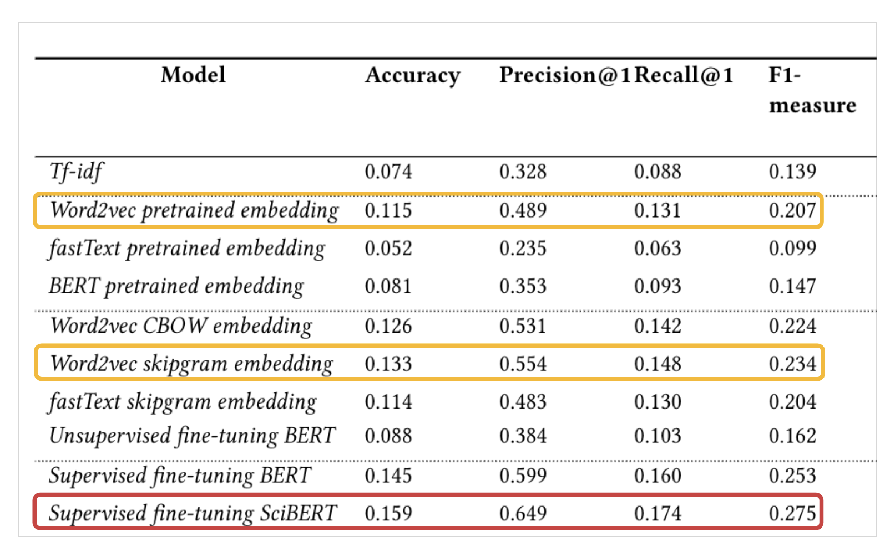

In Natural Language Processing (NLP), using word embeddings as input for training classifiers has become more common over the past decade. Training on a lager corpus and more complex models has become easier with the progress of machine learning techniques. However, these robust techniques do have their limitations while modeling for ambiguous lexical meaning.
In order to capture multiple meanings of words, several contextual word embeddings methods have emerged and shown significant improvements on a wide rage of downstream tasks such as question answering, machine translation, text classification and named entity recognition.
This study focuses on the comparison of classical models which use static representations and contextual embeddings which implement dynamic representations by evaluating their performance on multi-labeled text classification of scientific articles.
What is Multi-label classification
In general, the classification task in machine learning aims to explore knowledge that can be used to predict the unknown class of an instance based on the features of the input instances. A classification problem can be categorized into two groups: single-label classification and multi-label classification.
Single classification tasks concerned with learning from a set of examples that are associated with a single label from a set of disjoint labels. In multi-label classification, the examples can be associated with two or more concept labels.
Over the past years, multi-label classification tasks appears in a wide range of real-world situations and applications, and the existing multi-label classification methods can be grouped into three categories: a) problem transformation methods, b) algorithm adaptation methods and c) Ensemble methods.
Problem transformation methods transform the multi-label classification problem into either one or more single-label classification or regression problems, and an algorithm adaptation approach aims to extend specific learning algorithms in order to handle multi-label data directly without requiring any preprocessing. The ensemble based multi-label classifiers are developed on top of the problem transformation and algorithm adaptation methods.
What is BERT
Before we dive into BERT model, let's talk about the contextualized word embeddings and why do we need it.
In the distributed word representation, each word type is projected as a single point in the semantic space no matter which content it appears in. However, in the real world, words tend to have different meanings in different contexts. Capturing the multiple meanings of a word and conflates all the meaning into one single vector has become the biggest limitation in word embedding learning.
In order to adapt to dynamic polysemy language model, contextualized word embedding has emerged to analyze the context of the target word and generate its dynamic embedding.
One of the latest milestones for contextual word embedding is the release of BERT, a deep bidirectional transformer model released by Google. BERT builds upon several robust pre-training contextual embeddings including Semi-supervised Sequence Learning, Generative Pre-Training, ELMo, and ULMFit.
Unlike these previous models, which looked at a text sequence either from left to right or combined left-to-right and right-to-left, BERT proposed a new language modeling method called Masked language modeling to achieve the deep bidirectional training.
 Architecture of the BERT, OpenAI and ELMo on a high levelThe arrows indicate the information flow from one layer to the next. The green boxes at the top indicate the final contextualized representation of each input word. It’s evident from the above image: BERT is bi-directional, GPT is unidirectional (information flows only from left-to-right), and ELMO is shallowly bidirectional.
Experiments on 10 different models: Classical v.s. BERT
I designed 10 different experiments and used different embedding methods to train a classifier. The results demonstrate that contextual word embeddings have outperformed the distributed word embeddings. Furthermore, the model that was fine-tuned on a scientific corpus (SciBERT) has achieved better results than the one fine-tuned on general domain collections or other models that use pretrained embeddings.  Measurements of prediction quality on test data using different embedding
In the first experiment, I built the Tf-idf model to compare the performance between the count-based method and the word embedding method. The result shows that tf-idf performs worse than most of the embedding methods. Tf-idf is an improved version of bag-of-words model and it does not capture the semantic meaning and the position of words.
Word2vec, fastText and BERT provide pretrained embeddings that were trained on a general domain. The results indicate that Word2vec has the best result compared to fastText and BERT among pretrained embeddings. In this case, using the fastText classifier with a pretrained embedding performed worse than the tf-idf method.
I also trained word2vec, fastText and BERT using our own dataset. The word2vec models were trained using two architectures: skipgram and CBOW. The fastText model was trained using skipgram and we fine-tuned the BERT model in an unsupervised way to learn the new embeddings. The word2vec skipgram model obtained the best result in this classification task and fastText with the pretrained embedding performed the worse.
In the pretrained embeddings experiments, not only the model ar- chitectures are distinct, but also the dataset used is different. On the other hand, training BERT from scratch is not realistic due to the limitation of time and computation power, hence BERT can only be fine-tuned on the general domain dataset.
Conclusion
In this study, I generated a training dataset consisting of the title and abstract of scientific articles that can be used as input to a logistic regression classifier. I conducted experiments with different embeddings including tf-idf, word2vec, fastText and BERT. The performances of the models are then evaluated using various evaluation metrics. The results show that the classical embeddings outperformed unsupervised contextual embeddings in the classification task, and training a model on a corpus of the scientific domain improves the accuracy score. The research also shown that the classification task can be improved significantly by training supervised contextual embeddings.
Like to check out more details? Please click the button below
Go back Home